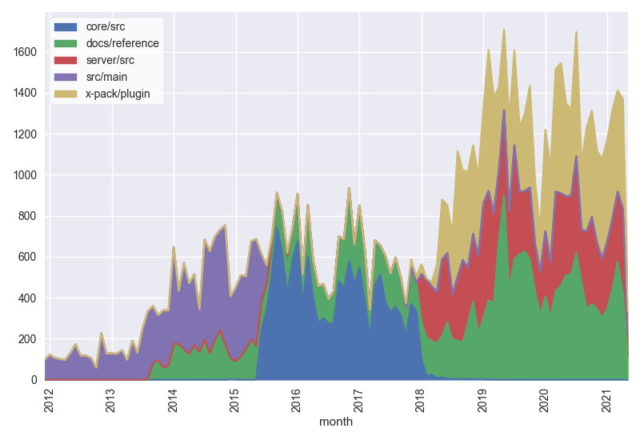
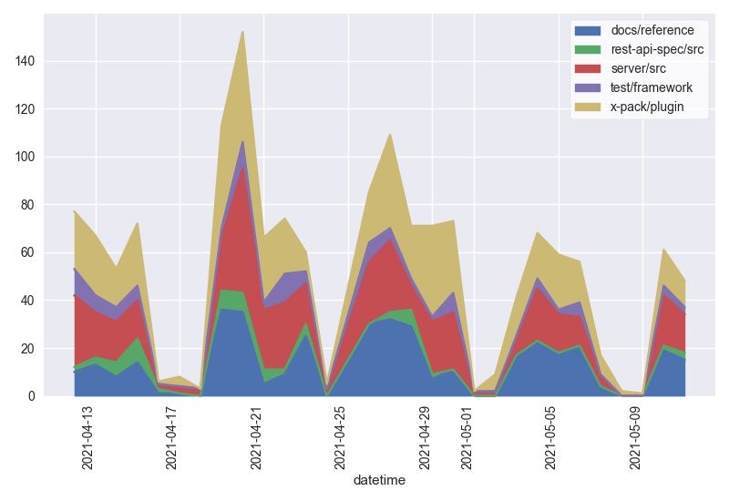
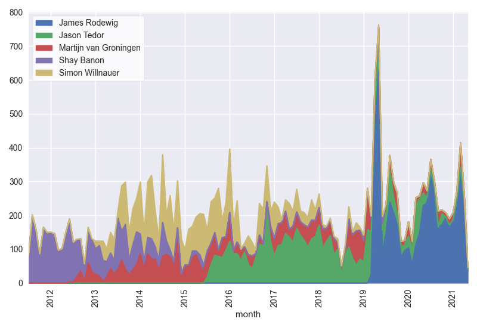
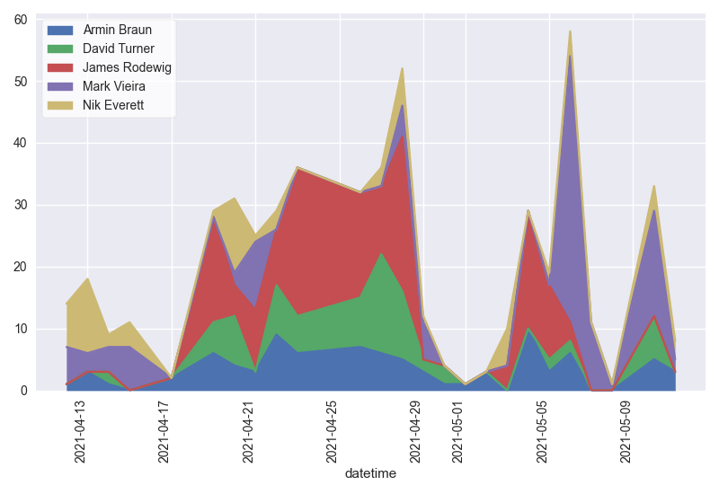
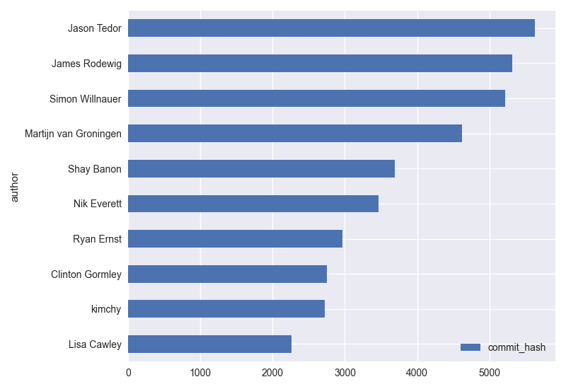
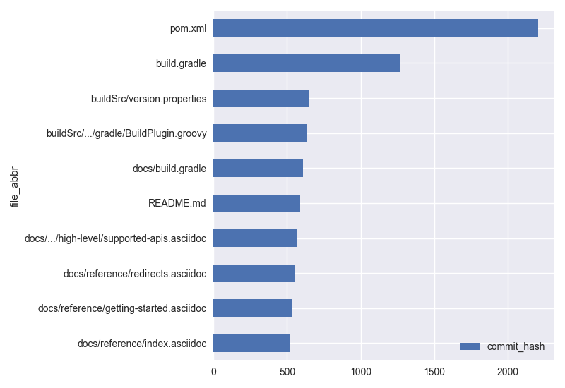
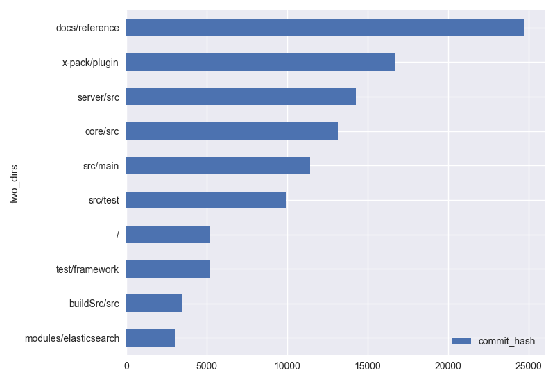
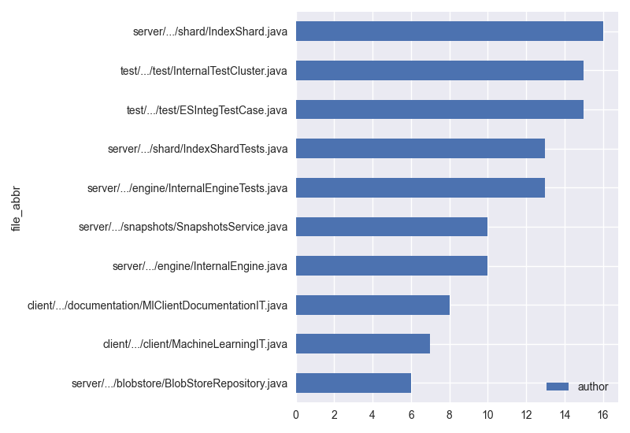

Git Analysis for: /Users/sziegler/Documents/GitHub/elasticsearch
Commits By Directory
Shows commits by the first two directories of the project to visualize what was worked on over time
All Time:

Last 30 Days:

Commits By Author
Shows commits by author to visualize who was working and when
All Time:

Last 30 Days:

Top Commits
By Author:
Shows commits by author to show the top contributors

By File:
Shows commits by file to show the busiest file

By Directory:
Shows commits by parent directory to show the busiest parent directory

Hotspots
Shows hotspot files in the code that are:
- complex as measured by file size
- changing frequently as measured by the number of commits
- recent having changed within 365 days
🔥 Hotspots
Commits Comp. Age Score File
479 328395 7 100.0 server/src/test/java/org/elasticsearch/index/engine/InternalEngineTests.java
478 181024 6 55.0 server/src/main/java/org/elasticsearch/index/shard/IndexShard.java
357 208313 1 47.3 server/src/test/java/org/elasticsearch/index/shard/IndexShardTests.java
422 164637 0 44.2 server/src/main/java/org/elasticsearch/repositories/blobstore/BlobStoreRepository.java
334 175359 2 37.2 server/src/main/java/org/elasticsearch/snapshots/SnapshotsService.java
265 213786 20 36.0 client/rest-high-level/src/test/java/org/elasticsearch/client/documentation/MlClientDocumentationIT.java
387 140061 7 34.5 server/src/main/java/org/elasticsearch/index/engine/InternalEngine.java
450 107638 13 30.8 test/framework/src/main/java/org/elasticsearch/test/InternalTestCluster.java
291 163705 36 30.3 client/rest-high-level/src/test/java/org/elasticsearch/client/MachineLearningIT.java
389 105875 11 26.2 test/framework/src/main/java/org/elasticsearch/test/ESIntegTestCase.java
Possible High Bus Factor:
Show the number of unique authors per hotspot file in the last year. If a hotspot file only has one author for the last 365 day, it has a high "bus factor" if that person left the team.
